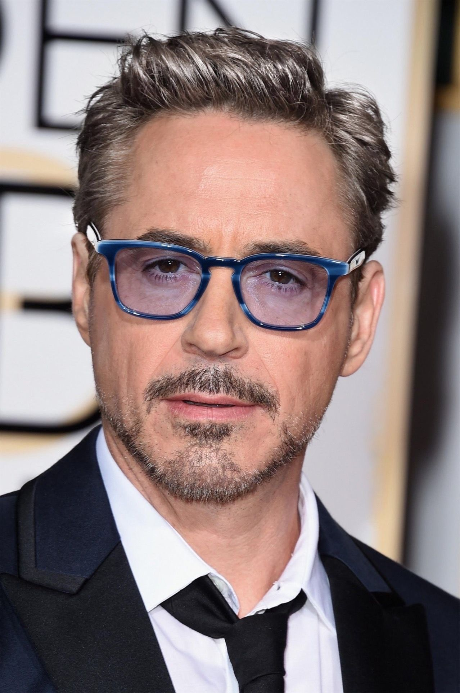

Robert Downey Jr. - A Brief Bio
Robert Downey Jr. is a globally renowned actor and producer known for his charismatic presence on the big screen and his impressive acting range. Born on April 4, 1965, in Manhattan, New York, he grew up in a family deeply connected to the entertainment industry. His father, Robert Downey Sr., was a respected filmmaker, and his mother, Elsie Ann Ford, was an actress.
Early Life And Career
Robert Downey Jr. began acting at a young age, following in his parents' footsteps. He made his debut in the film "Pound" at the age of five, directed by his father. Throughout his teenage years, he appeared in various films and television series, steadily building his acting skills.
Iconic Roles
He is best known for his portrayal of Tony Stark/Iron Man in the Marvel Cinematic Universe (MCU). His charismatic and witty performance as Iron Man became iconic, making him one of the most beloved and highest-paid actors in Hollywood. He appeared as Iron Man in numerous MCU films, including "The Avengers," "Iron Man" series, and "Avengers: Endgame."
Awards and Recognitions
Downey Jr. is an American actor and producer who has received numerous accolades throughout his career including an BAFTA Award, three Golden Globe Awards, and a Screen Actors Guild Award. He has also received nominations for two Academy Awards and a Primetime Emmy Award.
For his role as Charlie Chaplin in the Richard Attenborough directed biographical epic Chaplin (1991) he received the BAFTA Award for Best Actor in a Leading Role as well as nominations for the Academy Award for Best Actor and the Golden Globe Award for Best Actor - Motion Picture Drama. For his comedic role in Ben Stiller's satirical war comedy Tropic Thunder (2008) he received his second Academy Award nomination, this time for the Best Supporting Actor as well as nominations for the BAFTA Award for Best Supporting Actor and the Golden Globe Award for Best Supporting Actor.
Downey Jr. portrayed Larry Paul in the Fox legal drama Ally McBeal from 2000 to 2002. For his performance he earned the Golden Globe Award for Best Supporting Actor – Series, Miniseries or Television Film and the Screen Actors Guild Award for Outstanding Performance by a Male Actor in a Comedy Series as well as a nomination for the Primetime Emmy Award for Outstanding Supporting Actor in a Comedy Series.